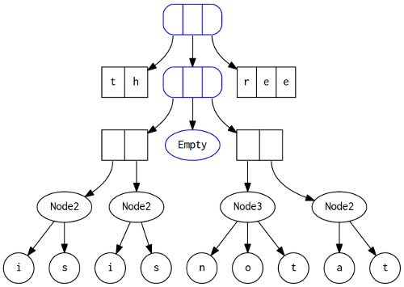

March 14, 2012 - Tagged as: haskell, en.
As a part of my journey of understanding functional programming and functional languages’ internals, I’m reading some classical papers about functional data structures. In this series of posts, I’ll be explaining Finger Trees, which I learned so much from.
At first I had tried to write about finger trees in one post but later I realized that it was too long and it contained lots of different concepts. So I decided to split it into 3-4 posts, each of them explaining a different concept. In each post, we’re going to implement a different data structure. First post is going to be about implementing a functional deque with Finger Trees. Second is going to be about priority queues, in which I also am going to explain an use of monoid s. Third is going to be about vectors, with efficient concatenation and slicing. And at last, I’m going to explain Clojure’s persistent vector’s internals, which I think it’s somewhat related with finger tree’s. Oh, and somewhere in between I’m going to write something about Peano numbers.
So, let’s start. AFAIK, the first paper about finger trees was Finger Trees: A Simple General-purpose Data Structure. I read the paper a couple of times and I found it too .. complex. So I’ll explain most of the stuff in my own words. Some part of the code will be different from code in the paper.
The problem finger trees are trying to solve is, since in functional setting we can’t mutate any structures, to form our structures in a way that making some specific changes on them should cost us minimum number of copying operations. This idea is similar to zippers. With zippers, we convert our structures to a form that make changes in some specific places cost us less copying operations, which means we can make changes more efficiently. And with finger trees, we have a structure that make modifications on two(or maybe more, depending on your implementation) places are really efficient. For instance, we can create deque with finger trees with efficient push_back, push_front, pop_back and pop_front operations.
Let’s assume a 2-3 tree, which we use as a deque. In order to make modifications on ends of the tree, we need to copy all nodes on it’s way to end. So we change the structure, like in zippers, create a new structure which looks like this:

For those who have already read the original paper, this example is the same with the paper. But I change the look of it. I found drawing of this example in paper confusing. It shows different nodes with same shapes, then gives a definition of the structure, which I found completely unrelated with the drawing.
This is a deque contains characters of “thisisnotatree”. To make some changes in front or back of the deque, all we need to change is the nodes containing “th” and “ree”, which are just ordinary arrays, and the root node. When arrays get bigger, we shift some elements from arrays to our tree structures. Let’s make some definitions(most of my ADTs are deriving from Show, I found it better to see internals of structures that I’m working on):
data Node s = Node2 s s | Node3 s s s
deriving (Show)
data FingerTree a = Empty
| Single a
| Deep (Digit a) (FingerTree (Node a)) (Digit a)
deriving (Show)
type Digit a = [a]In my drawing, blue nodes are FingerTrees, black nodes which characters inside are Digits1
So let’s see how we can add new Digits to the structure. In my examples, Digits will be [Char], which are the same with String. Later we’ll see we can use any types that provide some operations.
Let’s define addl and addr:
addl :: a -> FingerTree a -> FingerTree aWe have 4 cases, if we add to an empty finger tree, it’s obvious:
addl a Empty = Single aIf we add to a finger tree with only one element(Single a), we just shift old element to right part of the structure and put new element to left:
addl a (Single b) = Deep [a] Empty [b]When we add to a tree with left side contains 4 elements, we push two of this elements to subtree part, and push new element to new left part:
addl a (Deep [b,c,d,e] m sf) = Deep [a, b] (addl (Node3 c d e) m) sfAnd lastly, if our left part contains less than 4 elements, we just add a new element to the left part:
addl a (Deep pr m sf) = Deep ([a] ++ pr) m sfThe number of maximum elements in our left and right part of trees are arbitrary. When we come to Clojure’s persistent vector implementation, we’ll see that it could be 32, depending on your needs.
We can easily track our structure when creating a tree of “thisisnotatree”:
Empty
Single 'e'
Deep ['e'] Empty ['e']
Deep ['r', 'e'] Empty ['e']
Deep ['t', 'r', 'e'] Empty ['e']
Deep ['a', 't', 'r', 'e'] Empty ['e']
Deep ['t', 'a'] (Single (Node3 't' 'r' 'e')) ['e']
Deep ['o', 't', 'a'] (Single (Node3 't' 'r' 'e')) ['e']
Deep ['n', 'o', 't', 'a'] (Single (Node3 't' 'r' 'e')) ['e']
Deep ['s', 'n'] (Deep [(Node3 'o' 't' 'a')] Empty [(Node3 't' 'r' 'e')]) ['e']
Deep ['i' ,'s', 'n'] (Deep [(Node3 'o' 't' 'a')] Empty [(Node3 't' 'r' 'e')]) ['e']
Deep ['s', 'i' ,'s', 'n'] (Deep [(Node3 'o' 't' 'a')] Empty [(Node3 't' 'r' 'e')]) ['e']
Deep ['i', 's'] (Deep [(Node3 'i' 's' 'n'), (Node3 'o' 't' 'a')] Empty [(Node3 't' 'r' 'e')]) ['e']
Deep ['h', 'i', 's'] (Deep [(Node3 'i' 's' 'n'), (Node3 'o' 't' 'a')] Empty [(Node3 't' 'r' 'e')]) ['e']
Deep ['t', 'h', 'i', 's'] (Deep [(Node3 'i' 's' 'n'), (Node3 'o' 't' 'a')] Empty [(Node3 't' 'r' 'e')]) ['e']When I first saw the definition of FingerTree in the paper, I had no idea what was this all about, and tracing the structure while adding characters one by one helped me a lot. Notice that we have only one element in the right part. This is because we made all changes to the left part of the structure so right part remained unchanged.
push_right is just the mirror of push_left:
addr :: FingerTree a -> a -> FingerTree a
addr Empty a = Single a
addr (Single b) a = Deep [b] Empty [a]
addr (Deep pr m [e,b,c,d]) a = Deep pr (addr m (Node3 e d c)) [b,a]
addr (Deep pr m sf) a = Deep pr m (sf ++ [a])So, the structure of FingerTree’s and add operations should be clear now. To create FingerTrees from other collections, we need fold operations:
instance Foldable Node where
foldr f z (Node2 a b) = a `f` (b `f` z)
foldr f z (Node3 a b c) = a `f` (b `f` (c `f` z))
foldl f z (Node2 a b) = (z `f` a) `f` b
foldl f z (Node3 a b c) = ((z `f` a) `f` b) `f` c
instance Foldable FingerTree where
foldr _ z Empty = z
foldr f z (Single x) = x `f` z
foldr f z (Deep pr m sf) =
foldr f (foldr (flip (foldr f)) (foldr f z sf) m) pr
foldl _ z Empty = z
foldl f z (Single x) = z `f` x
foldl f z (Deep pr m sf) =
foldl f (foldl (foldl f) (foldl f z pr) m) sfFoldable typeclass is in Data.Foldable package. Only part that is not so trivial in this definitions is folding over a Deep structure. When we foldr over a Deep structure, we first foldr over it’s right part(sf), then foldr it over it’s subtree part, and then foldr it to right part. I don’t know how can I explain it more but if you inspect functions a little bit you’ll see that it’s just a recursive fold operation, and it really makes sense.
With help of this fold functions, we define some helpers:
addl' :: [a] -> FingerTree a -> FingerTree a
addl' = flip $ foldr addl
addr' :: [a] -> FingerTree a -> FingerTree a
addr' = flip $ foldl addrThose are not really necessary, just helpers. Now we can define a function to create FingerTrees from lists:
toTree :: [a] -> FingerTree a
toTree s = addl' s EmptySo now we can create FingerTree from a String with just toTree "thisisnotatree" Empty. From now on, we need some operations to pop each side of the deque . For this, authors of the original paper use a structure called view. I’m not sure if I’d do it the same way, but I’ll stick with the authors’ idea.
data LeftView s a = LeftNil | LeftCons a (s a)
deriving (Show)With this structure, we can easily create first and tail operations of FingerTree. But first we need to convert our FingerTrees to LeftView:
leftView :: FingerTree a -> LeftView FingerTree a
leftView Empty = LeftNil
leftView (Single x) = LeftCons x Empty
leftView (Deep pr m sf) = LeftCons (head pr) (leftDeep (tail pr) m sf)This code is trivial other than the last part. It just splits our structure to head and tail. With this, we can work on finger trees just like we work on any list. In the last case, we are calling leftDeep on tail of the left part, this is because we don’t want our tail tree’s left part to be empty. So if we call tail with the tree with one element in it’s left part, we get a new tree, with a left part not empty:
leftDeep :: [a] -> FingerTree (Node a) -> Digit a -> FingerTree a
leftDeep [] m sf = case leftView m of
LeftNil -> toTree sf
LeftCons a m' -> Deep (toList a) m' sf
leftDeep pr m sf = Deep pr m sfWith the help of this view functions, we can easily define head, tail and isEmpty:
isEmpty :: FingerTree a -> Bool
isEmpty x = case leftView x of
LeftNil -> True
LeftCons _ _ -> False
leftHead :: FingerTree a -> a
leftHead x = case leftView x of LeftCons a _ -> a
leftTail :: FingerTree a -> FingerTree a
leftTail x = case leftView x of LeftCons _ x' -> x'And that’s it. I’m omitting definitions of rightHead, rightTail and right view functions because they’re just mirrors of lefts. Now let’s talk about efficiency. I’m not experienced in that stuff so don’t expect a detailed explanation :) .
Since Haskell is a lazy language, when we call head function on left or right views, we only create head part of the view structures. Deque operations take more than constant time only when we have 4 elements in the left/right part of the tree. Also, changes affect next level of the tree only when we have 4 elements in the subtree’s left/right part. Which means, at most half of the operations descend to second level, and at most quarter of the operations descent to the third level. All of this gives us a great deque structure implemented as a FingerTree. You can refer to the paper for some detailed analysis :) .
BTW, Haskell’s Data.Sequence is just a FingerTree, implemented by the paper’s authors. Next, we’ll implement a priority queue based on ideas explained in this post. I’ll also talk about monoids.
Digit name here used for compatibility with the paper.↩︎